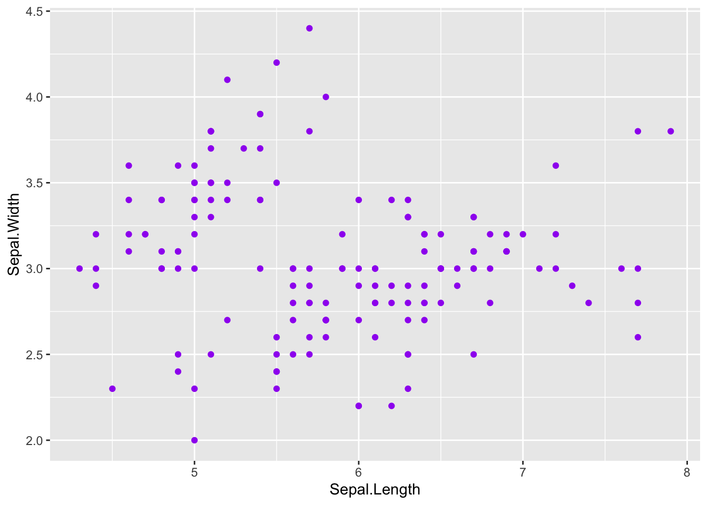
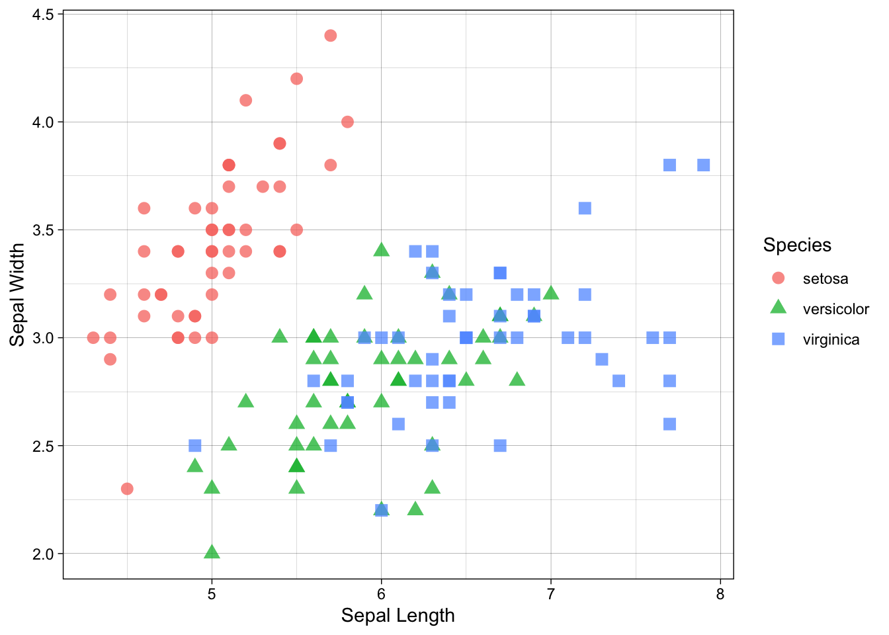
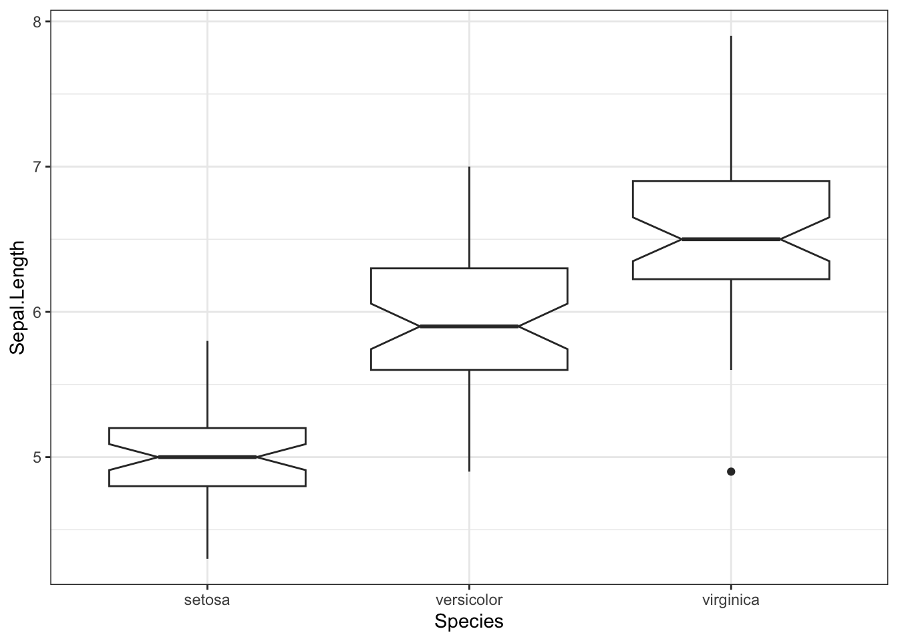
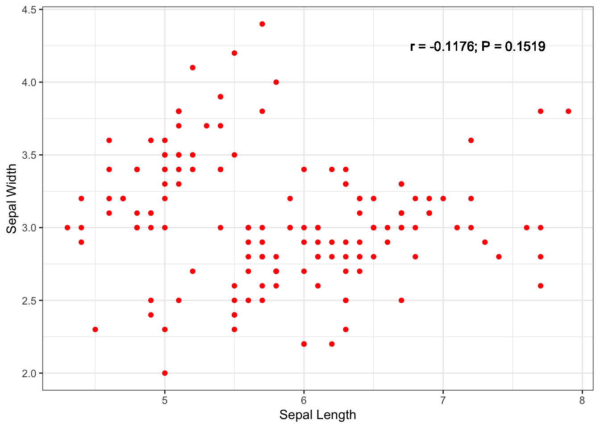
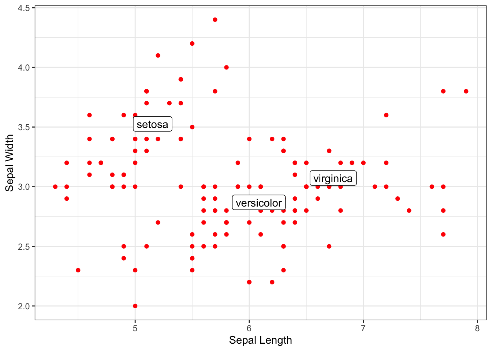

Warning: The `size` argument of `element_line()` is deprecated as of ggplot2 3.4.0.
ℹ Please use the `linewidth` argument instead.10 ggplot2 Graphics
The
ggplot2library is a gramattical approach to data display.
In base R, the graphics are generally produced by adding a lot of optional arguments to a single function such as plot() or barplot() or boxplot(). We can get some kinds of overlays using text() or points() or lines() but there is not a cohesive framework for setting this up. For even moderately complex graphical display, these approaches become unwieldy when we have to cram all that information into extra optional arguments.

Consider the graph below whose data are from a 2011 article in The Economist measuring human development and perception of corruption for 173 countries (Figure 10.1). Both the amount of data and the way in which the data are displayed (physically and aesthetically) are somewhat complex.
This graphic is constructed from several additive components1 including:
- A raw
data.framethat has several kinds of data (CPI, HDI, region, names, etc.).
- A aesthetic statement indicating which columns of data to use and how to use them in the plot (designating x-axis vs color, etc.).
- An estimate of a trendline through the data (the red one), which displays a statistical summary of the raw data.
- A set of geometric overlays for the points which include size and shape configurations.
- Specified color scheme for the regions.
- Labeling of a subset of the data (which is done using a separate
data.framederived from the first). - Labels on axes.
- A legend positioned in a specific fashion.
- A title over the whole thing.
- A theme for the rest of the coloring and customized lines and grids.
Truth be told (and you can look at the RMD of this file to verify), this one graphic required 42 relatively terse lines of code to construct! If all of that code was stuffed into the optional arguments for a few functions, I think I would go mad.
Luckily for us, there are people who spend a lot of time working on these issues and thinking about how to best help us effectively display data. One of these individuals was Leland Wilkinson, whose book The Grammar of Graphics defined just such a system.

This philosophy has been inserted into the R Ecosystem by Hadley Wickham in the ggplot2 library, which is descbribed as:
A system for ‘declaratively’ creating graphics, based on “The Grammar of Graphics”. You provide the data, tell ‘ggplot2’ how to map variables to aesthetics, what graphical primitives to use, and it takes care of the details.
Throughout the majority of this course, we will be using this library and this approach for all but the most trivial of graphical displays.
10.1 Basic ggplot
As outlined above, the basis of this appraoch is an additive (and iterative) process of creating a graphic. This all starts with the data. For our purposes, we will use the same iris data.frame as in the previous section on base graphics.

summary( iris ) Sepal.Length Sepal.Width Petal.Length Petal.Width
Min. :4.300 Min. :2.000 Min. :1.000 Min. :0.100
1st Qu.:5.100 1st Qu.:2.800 1st Qu.:1.600 1st Qu.:0.300
Median :5.800 Median :3.000 Median :4.350 Median :1.300
Mean :5.843 Mean :3.057 Mean :3.758 Mean :1.199
3rd Qu.:6.400 3rd Qu.:3.300 3rd Qu.:5.100 3rd Qu.:1.800
Max. :7.900 Max. :4.400 Max. :6.900 Max. :2.500
Species
setosa :50
versicolor:50
virginica :50
We start building a graphic using the ggplot() function and passing it the data.frame object. This will initialize the graphic, though it will not plot anything.
library(ggplot2)
ggplot( iris )
Next, we need to tell the plot which variables it will be using from the data.frame. For simplicity, we do not need to make special data objects with just the variables we want to plot, we can pass around the whole data.frame object and just indicate to ggplot which ones we want to use by specifying the aesthetics to be used.
ggplot( iris , aes( x=Sepal.Length ) )
At this point, there is enough information to make an axis in the graph because the underlying data has been identified. What has not been specified to date is the way in which we want to represent the data. To do this, we add geometries to the graph. In this case, I’m going to add a histogram
ggplot( iris, aes(x=Sepal.Length) ) + geom_histogram()`stat_bin()` using `bins = 30`. Pick better value with `binwidth`.
Now we have a base graph!
10.2 Aestheics and Scope
The location of the data and the aes() determines the scope of the assignment. What I mean by this is:
- If the data and
aes()is in the theggplot()function, then everything in the whole plot inherits that assignment. - If you put them in one or more of the components you add to
ggplot()then the they are localized to only those layers.
So the following statements are all identical for this most basic of plots.
ggplot( iris, aes(x=Sepal.Length) ) + geom_histogram()
ggplot( iris ) + geom_historgram( aes(x=Sepal.Length) )
ggplot() + geom_histogram( aes(x=Sepal.Length), data=iris)- In the first case, the
geom_histogram()inherits both data and aesthetics fromggplot().
- In the second one, it inherits only the data but has it’s own specification for aesthetics.
- In the last one,
ggplot()only specifies the presence of a graph and all the data and aesthetics are localized withingeom_histogram()function.
Where this becomes important is when we want to make more complicated graphics like the one above. The data that has the country CDI and HDI also has the names of the countries. However, only a subset of the country names are plot. This is because both the geometric layer and the text layer that has the names are using different data.frame objects.
Here is a more simplistic example where I overlay a density plot (as a red line) on top of the histogram.
ggplot( iris, aes(x=Sepal.Length) ) + geom_histogram() + geom_density( col="red")`stat_bin()` using `bins = 30`. Pick better value with `binwidth`.
Both the geom_histogram and the geom_density use the same data and same specification for how to deal with the y-axis. However, the density is depicted as a frequency on the y-axis whereas the histogram uses counts. Also notice how the col="red" is localized just for the geom_density() layer.
We can override the way in which geom_histogram uses the y-axis by changing the aesthetics for that particular geometric layer. Here, I’m goint to add another aes() just within the geom_histogram() function and have it treat y as the density rather than the count (yes that is two periods before and after the word density).
ggplot( iris, aes(x=Sepal.Length) ) + geom_histogram(aes(y=..density..)) + geom_density( col="red" )Warning: The dot-dot notation (`..density..`) was deprecated in ggplot2 3.4.0.
ℹ Please use `after_stat(density)` instead.`stat_bin()` using `bins = 30`. Pick better value with `binwidth`.
By default, everything inside the ggplot() function call is inherited by all the remaining components unless it is specifically overridden. Here is a more pedantic version where only the raw data.frame is in the ggplot and the rest is in each of the geometric layers.
ggplot( iris ) +
geom_histogram( aes(x=Sepal.Length, y=..density..) ) +
geom_density( aes(x=Sepal.Length), col="red", lwd=2)`stat_bin()` using `bins = 30`. Pick better value with `binwidth`.10.3 Labels & Titles
Just like we added geometric layers to the plot to make histograms and densities, we do the same for labels and titles.
ggplot( iris, aes(x=Sepal.Length) ) +
geom_histogram( aes(y=..density..), bins = 10, fill="lightgray", col="darkgrey" ) +
geom_density( col="red", lwd=1.5) +
xlab("Length") + ylab("Density") +
ggtitle("Sepal Lengths for Three Iris Species")10.4 Scatter Plots
With two columns of data, we can make the old scatter plot using the geom_point() function.
ggplot( iris, aes(x=Sepal.Length, y=Sepal.Width) ) + geom_point( col="purple") 
In this plot, we are hiding some of the information by having all the points be the same color and shape. We could have a geom_point for each species as follows:
ggplot( ) +
geom_point( aes( x = Sepal.Length, y = Sepal.Width), data=iris[ 1:50,], col="red") +
geom_point( aes( x = Sepal.Length, y = Sepal.Width), data=iris[ 51:100,], col="yellow" ) +
geom_point( aes( x = Sepal.Length, y = Sepal.Width), data=iris[ iris$Species == "virginica", ], col="darkgreen" ) But that is a lot of typing. In cases like this, where there is a an actual column of data that we want to use to change the appearance (e.g., in this case the Species column), we can put this within the aes() directly and ggplot() will handle the specifics for you. Anything we do to reduce the amount of typing we must do is going to help us be more accurate analysts.
ggplot( iris, aes( x = Sepal.Length, y = Sepal.Width, col=Species) ) + geom_point()
10.4.1 In or Out of aes()
Notice in the last graph I put the name of the data column in the aesthetic but have the color (col) within the aes() function call in the graph before that, I put color outside of the aes() in the geom_point() function. What gives? Here is a simple rule.
If information from within the
data.frameis needed to customize the display of data then it must be designated within theaes(), whereas if the display of the data is to be applied to the entire geometric layer, it is specified outside of theaes()call.
Here is an example, where I have the color of the shapes determined by a value in the data.frame but have the shape2 applied to all the points, independent of any data in the data.frame.
ggplot( iris ) + geom_point(aes( x = Sepal.Length, y = Sepal.Width, col=Species), shape=5)We can build these things in an iterative fashion making things easier to read. In what follows I will use the basic plot from above but assign it to the variable p as I add things to it. It can be as iterative as you like and you can add a bunch of stuff and wait until the end to display it.
p <- ggplot( iris )
p <- p + geom_point(aes( x = Sepal.Length, y = Sepal.Width, col=Species, shape=Species), size=3, alpha=0.75 )
p <- p + xlab("Sepal Length")
p <- p + ylab("Sepal Width")The overall class of the plot varible is
class(p)[1] "gg" "ggplot"And there is no plot output until we display it specifically.
p10.5 Themes
The overall coloration of the plot is determined by the theme.
p + theme_bw()p + theme_dark()
p + theme_minimal()
p + theme_linedraw()
p + theme_void()
You can even define your own themes to customize all the text and lines.
One thing that I like to do is to specify a default theme for all my plots. You can accomplish this using theme_set() and from this point forward, this theme will be used as the default (again, we need to try as hard as possible to minimzie the amount of typing we do to minimize the amount of mistakes we make).
theme_set( theme_bw() )10.6 Boxplots
ggplot( iris, aes( x = Sepal.Length) ) + geom_boxplot( notch=TRUE )
ggplot( iris, aes(x=Species, y=Sepal.Length) ) + geom_boxplot( notch=TRUE )
10.7 Overlays
Just like in the previous
p <- ggplot( iris, aes(Sepal.Length, Sepal.Width) ) +
geom_point(col="red") +
xlab("Sepal Length") +
ylab("Sepal Width")The order by which you add the components to the ggplot() will determine the order of the layers from bottom to top—the. Layers added earlier will be covered by content in layers that are added later. Compare the following plot that takes the length and width of the sepals and overlays a linear regression line over the top.
p + geom_point(col="red") +
stat_smooth( formula = y ~ x, method="lm", alpha=1.0)
Compare that plot to the one below. Notice how puting stat_smooth() in front of the call to geom_point() layes the regression smoothing line and error zone underneath the points.
p + stat_smooth(formula = y ~ x, method="lm", alpha=1.0) +
geom_point(col="red") 
10.8 Labeling
We can create two kinds of annotations, text on the raw graph and text associated with some of the points. Labels of the first kind can be added direclty by placing raw data inside the aes() function.
I’ll start by taking the correlation between sepal width and length.
cor <- cor.test( iris$Sepal.Length, iris$Sepal.Width )
cor
Pearson's product-moment correlation
data: iris$Sepal.Length and iris$Sepal.Width
t = -1.4403, df = 148, p-value = 0.1519
alternative hypothesis: true correlation is not equal to 0
95 percent confidence interval:
-0.27269325 0.04351158
sample estimates:
cor
-0.1175698 And then grab the raw data from it and make a message.
cor.text <- paste( "r = ", format( cor$estimate, digits=4), "; P = ", format( cor$p.value, digits=4 ), sep="" )
cor.text[1] "r = -0.1176; P = 0.1519"That I’ll stick onto the graph directly
p + geom_text( aes(x=7.25, y=4.25, label=cor.text))
Alternatively, we may want to label specific points. Here I find the mean values for each species.
mean_Length <- by( iris$Sepal.Length, iris$Species, mean, simplify = TRUE)
mean_Width <- by( iris$Sepal.Width, iris$Species, mean, simplify = TRUE)
mean_Values <- data.frame( Species = levels( iris$Species),
Sepal.Length = as.numeric( mean_Length ),
Sepal.Width = as.numeric( mean_Width ) )
mean_Values Species Sepal.Length Sepal.Width
1 setosa 5.006 3.428
2 versicolor 5.936 2.770
3 virginica 6.588 2.974To plot and label these mean values, I’m going to use two steps. First, since I named the columns of the new data.frame the same as before, we can just inherit the aes() but substitute in this new data.frame and add label=Species to the the aesthetics.
p + geom_text( data=mean_Values, aes(label=Species) )But that is a bit messy. Here is a slick helper library for that that will try to minimize the overlap.
library( ggrepel )
p + geom_label_repel( data=mean_Values, aes(label=Species) )
Slick.
10.9 Questions
If you have any questions for me specifically on this topic, please post as an Issue in your repository, otherwise consider posting to the discussion board on Canvas.